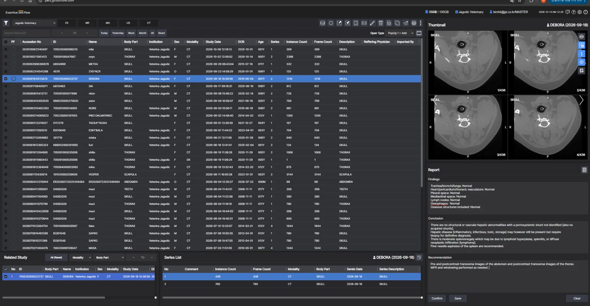

WEB PACS
설치는 필요 없어요.
CT도 바로 열리는 웹 PACS
검사를 열기 전에 영상을 미리 불러와 두니까, 수천 장짜리 CT도 기다리지 않아요.
저장부터 판독, 리포트 작성까지 병원 어느 PC에서나 이어서 하세요.
- 클라우드로 바로 시작
- 병원 서버 설치도 가능
- Chrome · Edge면 끝, 설치 없음
- 동물용 의료기기 2등급 허가

1234
찾는 검사, 바로 찾기
환자 이름이나 ID, 날짜, 모달리티로 검색하세요. 자주 쓰는 조건은 저장해 두면 한 번에 불러와요.
열기 전에 미리 보기
썸네일로 시리즈를 먼저 확인하고, 필요한 영상만 골라 여세요.
보면서 바로 판독
영상 옆에서 소견과 결론을 쓰고, 임시 저장했다가 확정하면 끝이에요.
지난 검사와 나란히
같은 환자의 이전 검사가 타임라인에 모여 있어, 클릭 한 번으로 비교할 수 있어요.
IMAGE ADJUSTMENT / WINDOW PRESETS클릭 한 번으로,
보고 싶은 조직을 선명하게.
폐, 뼈, 뇌처럼 조직별 프리셋을 우클릭으로 바로 적용하세요. 드래그로도 조절할 수 있어요.
01 / 자주 쓰는 영상 조정 도구
25–800%확대 · 축소 범위
1–30 FPS시네 재생 속도
02 / 조직별 프리셋
- 폐결절 · 기관지
- 복부간 · 비장 · 신장
- 뇌뇌 조직 · 출혈
- 뼈골절 · 골밀도
- 척추골절 · 디스크
- 연부조직근육 · 종괴
우클릭 한 번으로 프리셋을 바꾸고, 드래그로 밝기와 대비를 세밀하게 조절하세요.
HANGING PROTOCOLS / MULTI-MONITOR늘 보던 배치 그대로,
모니터 3대까지 알아서.
CT를 열면 새 검사와 지난 검사가 정해 둔 모니터에, 정해 둔 화면 분할로 자동으로 펼쳐져요.
한 번만 설정해 두면 어느 판독 PC에서든 CT · DX · MR이 늘 같은 모습으로 열려요.
예시 · 모니터 3대로 CT 비교 판독
모니터 위치는 판독 PC마다 따로 저장돼요.
OPERATIONS AND COMPLIANCE
보안과 관리는 저희가 챙길게요.
01병원마다 따로,
안전하게 분리
병원마다 저장 공간과 계정이 따로 나뉘어 데이터가 섞이지 않아요.
02전 구간 암호화,
모든 기록은 그대로
접속과 영상 전송은 모두 암호화되고, 누가 언제 봤는지 기록이 남아요.
03어떤 장비와도
잘 맞는 DICOM
CT, MR, CR, DR, 초음파 등 표준 DICOM 영상을 그대로 주고받아요.
04허가받은
동물용 의료기기
농림축산검역본부에서 동물용 의료기기 2등급 허가를 받았어요.
DEPLOYMENT / CLOUD · ON-PREMISE클라우드로 가볍게,
병원 서버로 안전하게.
우리 병원에 맞는 방식으로 시작하세요.
나중에 바꾸거나 함께 써도 괜찮아요.
EITHER WAY
어떤 방식이든,
원격 판독과 바로 연결돼요.
병원이 커져도 그대로 이어서 쓰세요. ↗
01CLOUD PLATFORM
오늘 신청하면, 오늘 시작
서버를 들이거나 따로 관리할 필요가 없어요.
업데이트와 백업은 자동으로 해 드려요.
02ON-PREMISE PLATFORM
영상은 병원 안에만
병원 서버에 설치해 영상이 밖으로 나가지 않아요.
기능은 클라우드와 똑같아요.
03SYSTEM REQUIREMENTS
브라우저만 있으면 돼요
Chrome이나 Edge(110 이상)면 충분해요.
따로 설치할 프로그램이 없어요.
FAQ
궁금한 점이 있으신가요?
따로 설치해야 하는 프로그램이 있나요?
아니요, Chrome이나 Edge(110 이상) 브라우저만 있으면 돼요. 병원 어느 PC에서나 접속해서 바로 판독하세요.
클라우드와 병원 서버 설치는 어떻게 다른가요?
클라우드는 서버 없이 바로 시작할 수 있고, 업데이트와 백업도 자동으로 해 드려요. 병원 서버에 설치하면 영상이 병원 밖으로 나가지 않아요. 기능은 똑같고, 나중에 바꾸거나 함께 써도 괜찮아요.
지금 쓰는 촬영 장비와 연결되나요?
CT, MR, CR, DR, 초음파, PET, XA 영상을 표준 DICOM으로 주고받아요. 다른 PACS로 보내거나 필름 프린터로 바로 출력할 수도 있어요.
우리 병원 영상은 안전하게 보관되나요?
병원마다 저장 공간과 계정이 따로 주어져서 데이터가 서로 섞이지 않아요. 접속과 영상 전송은 모두 암호화(TLS 1.2 이상)되고, 누가 언제 보고 내보냈는지 기록이 남아요.
원격 판독도 함께 쓸 수 있나요?
네, 워크리스트에서 ‘판독 의뢰’만 누르면 전문 판독의가 같은 영상을 그대로 봐요. 영상을 다시 올릴 필요가 없고, 완료된 리포트는 그 검사에 자동으로 붙어요. 원격 판독만 쓰셔도 웹 PACS 뷰어는 기본으로 제공돼요.
도입 전에 써 볼 수 있나요?
네, 데모를 신청하시면 우리 병원 영상으로 직접 써 보실 수 있어요. 아래 ‘데모 신청하기’를 눌러 주세요.